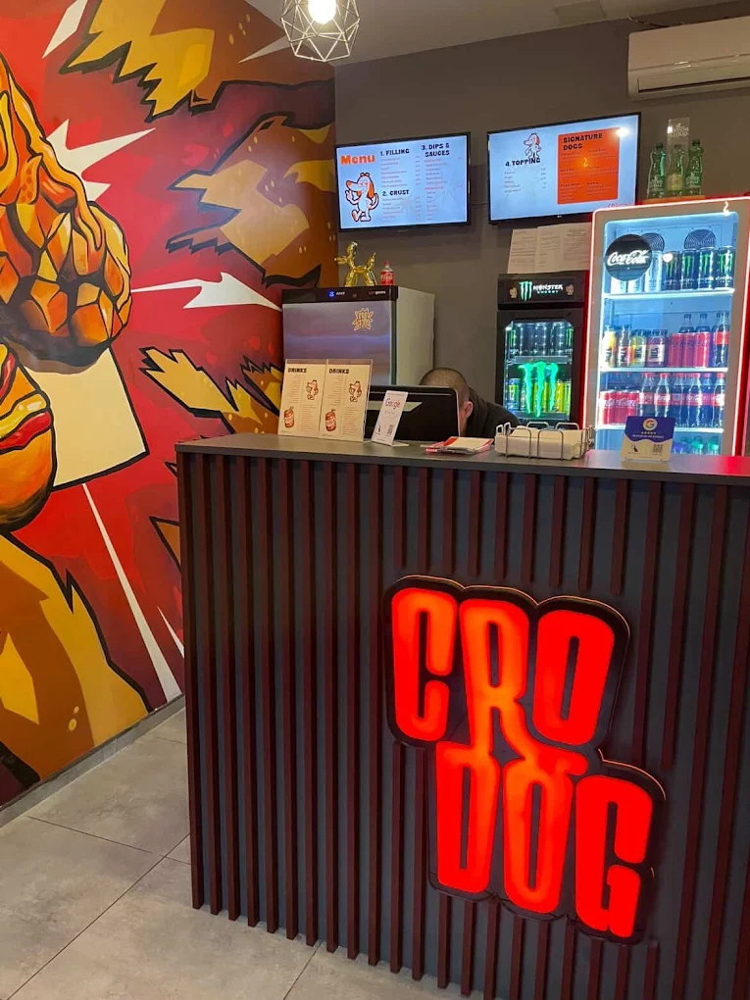

Google
★★★★★
Sve preporuke, jako ukusno, puno izbora i razumna cijena. Pohvale za super usluzne radnike. Jedini pravi corn dog u Hrvatskoj, svaka cast.
Bruno je putovao preko bare, probao prvi corndog i vratio se u Zagreb s mišlju: zašto to ne postoji kod nas? Zajedno s Blažom napravio je CroDog — prvi corndog dućan u Hrvatskoj.

Prvi CroDog se rodio iz jednog New York zalogaja.
Bruno je putovao u New York i tamo probao corndog po prvi put. Odmah je znao — ovo Zagrebu fali. Kad se vratio, zatražio je isto doma i shvatio da takvo nešto još uvijek ne postoji u Hrvatskoj.
S Blažom je odmah pokrenuo projekt. Ideja je bila jednostavna: ne jedan corndog za sve, nego Build Your Own — ti biraš, mi pečemo. Tako se kombinacije ne ponavljaju, svaki je corndog malo drugačiji.
Danas tu su klasici: hrenovka, debrecinka, mozzarella. House umaci po domaćem receptu, plus klasike koje svi znaju. A Half & Half je bestseller jer jednostavno radi — sir i meso u istom zalogaju.
Prave recenzije s Google Mapsa — nepromijenjene.
Sve preporuke, jako ukusno, puno izbora i razumna cijena. Pohvale za super usluzne radnike. Jedini pravi corn dog u Hrvatskoj, svaka cast.
Corn dog je odličnog okusa, a interijer je cool i moderan. Osoblje je također bilo vrlo ljubazno i opušteno. Iako ću reći da je prosječna cijena malo visoka, mogu to preboljeti s obzirom na to da je danas sve skuplje. Jako mi se svidjelo što su stavili puno umaka na corndog. Sve u svemu, preporučio bih da navratite ako ste u blizini.
Fino i drugačije. Svaka čast dečki na ideji, realizaciji, kvaliteti, hrabrosti… Sretno!
Ti biraš svaki sastojak. Mi ti ne nutrimo gotov corndog — pravimo ga kako ti želiš, na licu mjesta.
Nema smrznutog. Sve se radi pred tobom u trenutku narudžbe — od crusta do umaka.
Pet domaćih umaka po vlastitim receptima — plus 7 klasika. Svaki corndog dobiva svoj okus.